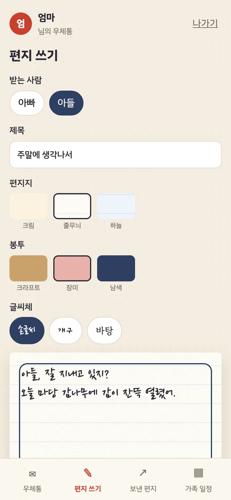
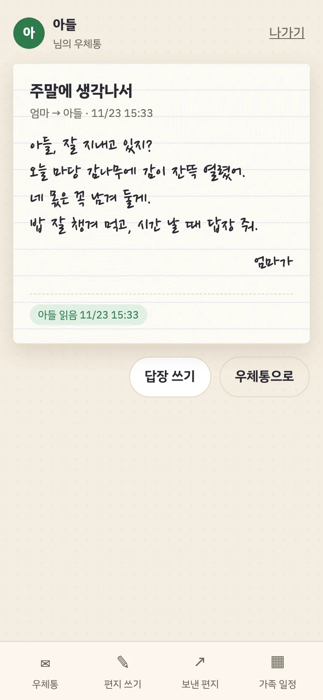
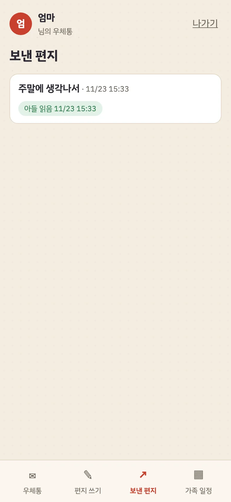

S3 앞에 CloudFront 추가
계획서는 S3로 화면을 내보낼 예정이었습니다. 그런데 S3 웹사이트 주소는 HTTP만 지원하고, 이 화면에서는 비밀번호를 입력합니다. 그래서 CloudFront를 앞에 두어 HTTPS로만 열리게 하고, 버킷은 CloudFront만 읽도록 막았습니다.
떨어져 지내는 가족이 편지로 마음을 전하고, 가족 일정을 함께 보는 모바일 웹 서비스입니다. 기획서를 쓰고, 화면과 API를 만들고, 제 AWS 계정에 배포해 가족 계정으로 실제 편지를 주고받기까지 확인했습니다.




인프라 전체를 AWS SAM 템플릿 파일 하나로 정의해, 명령 한 번으로 만들고 지울 수 있게 했습니다.
계획서는 S3로 화면을 내보낼 예정이었습니다. 그런데 S3 웹사이트 주소는 HTTP만 지원하고, 이 화면에서는 비밀번호를 입력합니다. 그래서 CloudFront를 앞에 두어 HTTPS로만 열리게 하고, 버킷은 CloudFront만 읽도록 막았습니다.
처음에는 편지 화면을 띄우기만 해도 읽음으로 기록했습니다. 그러면 봉투만 본 상태도 읽음이 됩니다. 받는 사람이 「봉투 열기」를 누른 첫 순간에만 시각을 남기도록 고치고, 같은 편지를 다시 열어도 덮어쓰지 않게 했습니다.
스스로 가입하는 기능은 없고, 관리자 스크립트로 만든 계정만 로그인합니다. 배포할 때는 오래 남는 접근 키를 만들지 않고, 콘솔 로그인으로 임시 자격을 받는 방식을 썼습니다. 루트 계정은 MFA를 걸어 두고 배포에 쓰지 않았습니다.
배포 도구가 성공이라고 알려 준 것과는 별도로, 요청을 직접 보내고 저장된 기록을 열어 확인했습니다.
| 확인한 것 | 방법 | 결과 |
|---|---|---|
| 남의 편지·가족 아닌 사용자 차단 | 로컬 단위 테스트(DynamoDB 모의) | 17개 통과 |
| 로그인 없이 API 호출 | 토큰 없이, 가짜 토큰으로 요청 | 401 거부 |
| 화면 저장소 직접 접근 | S3 주소로 직접 요청 · http://로 접속 | 403 거부 · HTTPS로 이동(301) |
| 편지 전달 | 아빠 → 아들 편지 발송 뒤 데이터베이스 조회 | 원본·보낸 편지함·받은 편지함 3건이 한 번에 기록 |
| 읽음 시각 | 아들 계정으로 봉투 열기 | 보낸 뒤 45초에 연 시각이 기록됨 |
| 서버 오류 | Lambda 로그 1시간 검색 | 오류 0건 · 경보 2개 정상 |
가족을 한 명만 초대한 상태에서 편지 쓰기를 열자 받는 사람 칸이 비어 있었습니다. 동작 자체는 맞았지만 고장처럼 보였습니다. 「아직 초대된 가족이 없어요」 안내를 띄우고 보내기 버튼을 막도록 고쳤습니다.
초대 스크립트가 임시 비밀번호를 화면에 출력하는 바람에, 작업 기록에 그대로 남았습니다. 해당 계정은 첫 로그인으로 비밀번호를 바꿔 무효로 만들었고, 스크립트는 화면 대신 클립보드로 넘기게 고쳤습니다. 다시 발급하는 스크립트도 추가했습니다.
권한 검증(다른 사람 편지 접근, 가족 아닌 계정)을 배포 환경에서 다시 확인하고, 구동 영상을 찍고, 1차 피드백을 반영한 기록을 이 페이지에 덧붙입니다.